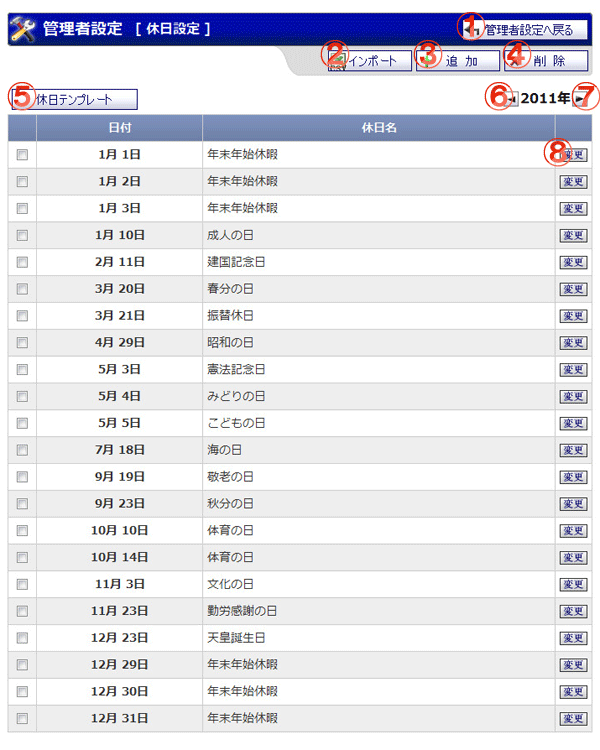

GroupSession内で使用される休日を設定する画面です。

機能説明
管理者設定へ戻るボタン管理者設定画面へ遷移します。 |
インポートボタン休日設定インポート画面へ遷移します。 |
|---|---|
追加ボタン休日追加画面へ遷移します。 |
削除ボタン休日削除確認画面へ遷移します。選択された休日のみ削除されます。未選択状態の場合は遷移しません。 |
休日テンプレートボタン休日テンプレート画面へ遷移します。休日テンプレート画面では、休日テンプレートの作成、休日テンプレートの休日への反映などが行えます。 |
前年度ボタン前年度の休日一覧を表示します。 |
来年度ボタン来年度の休日一覧を表示します。 |
変更ボタン休日修正画面へ遷移します。休日情報の修正を行うことが出来ます。 |